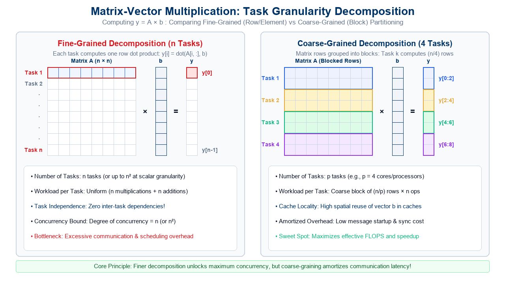
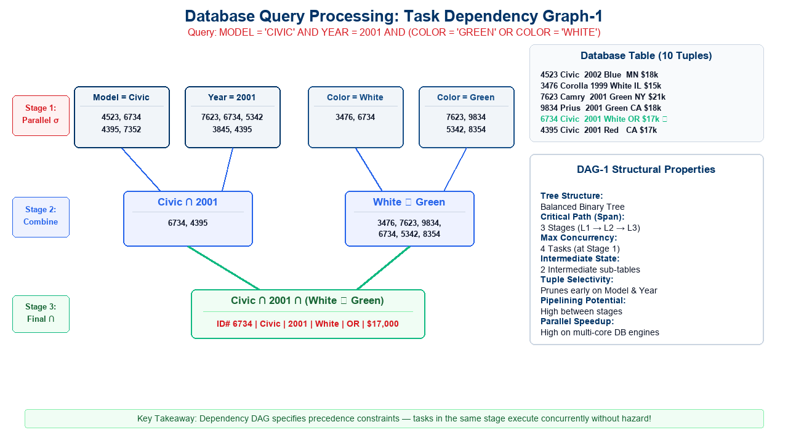
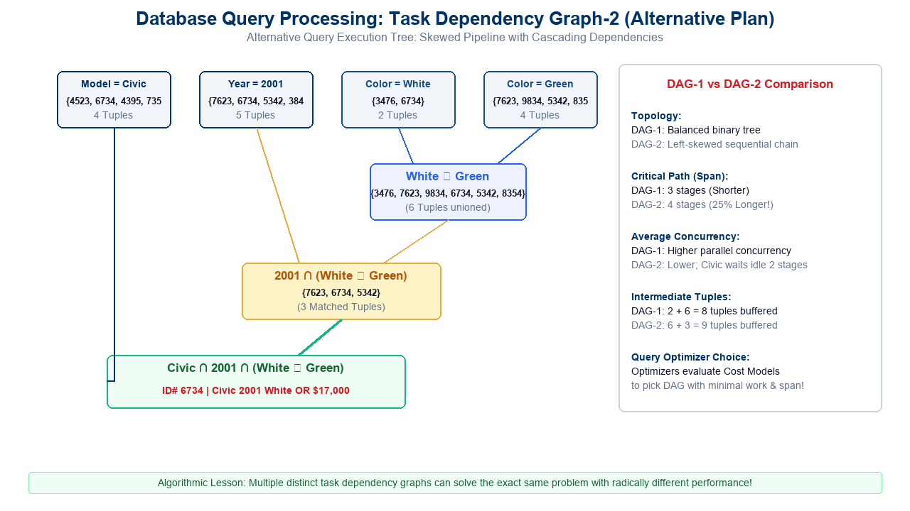
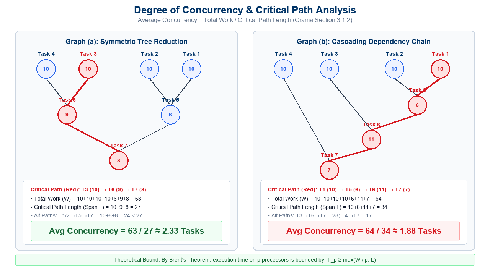
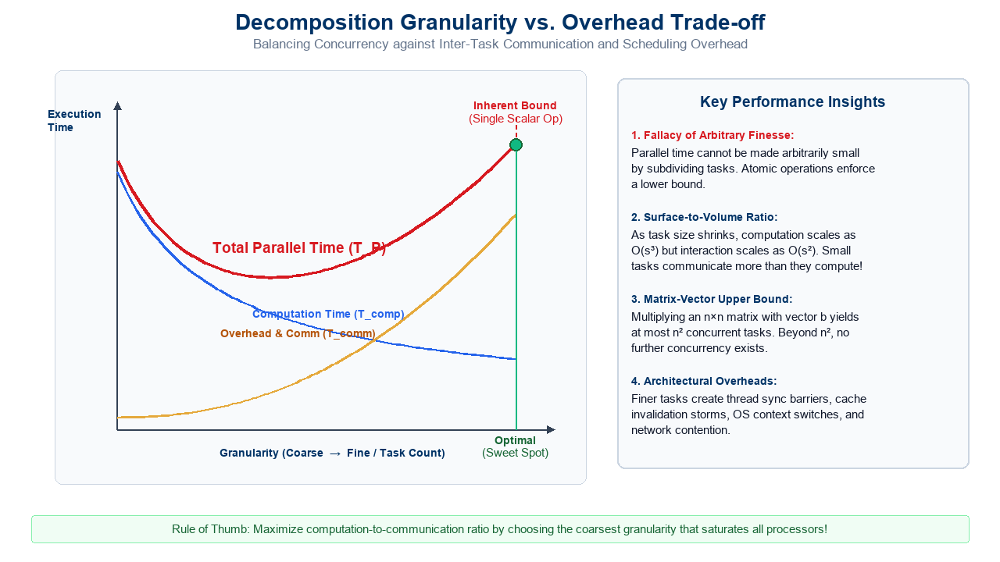
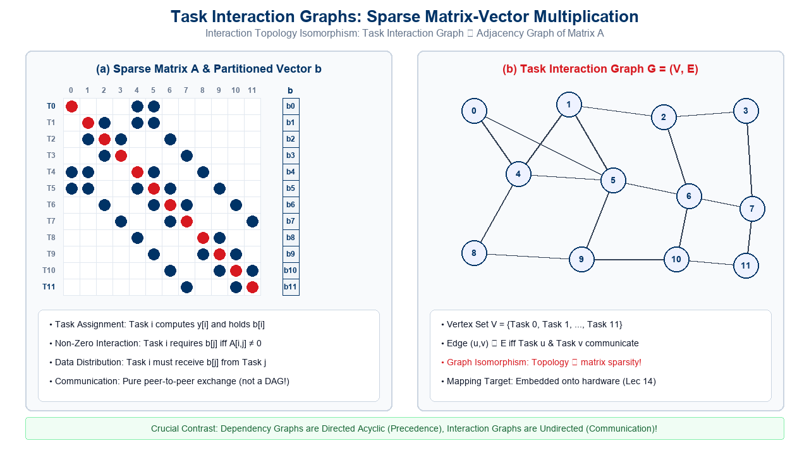
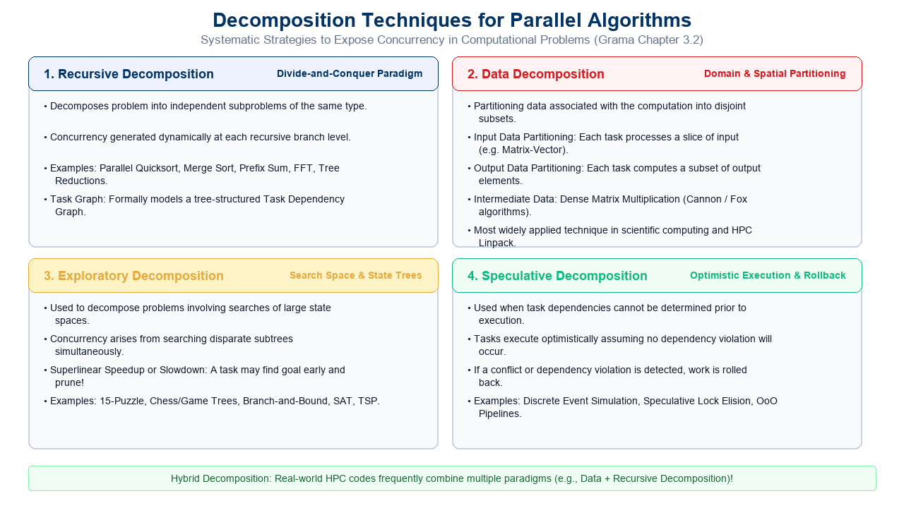

Principles of Parallel Algorithm Design: Decomposition & Concurrency
Lecture Outline
- The Parallel Algorithm Paradigm:
- Sequential algorithms vs. The added dimension of concurrency.
- The 5 Pillars of Parallel Algorithm Design.
- Foundational Abstractions & Definitions:
- Decomposition: Dividing work into concurrent parts.
- Tasks: Programmer-defined units of computation.
- Task Dependency Graph: Directed Acyclic Graphs (DAGs) representing precedence constraints.
- Decomposition Case Studies:
- Matrix-Vector Multiplication: Independent row tasks vs. scalar multiplication granularity.
- Database Query Processing: Relational selection, join, and union pipelines.
- Alternative Query Trees: Dependency Graph-1 vs. Graph-2 structural and concurrency trade-offs.
- Granularity & Concurrency Metrics:
- Granularity spectrum: Fine-grained vs. Coarse-grained decomposition.
- Maximum vs. Average Degree of Concurrency.
- Critical Path Length (\(L\)) / Span (\(D\)) and Total Work (\(W\)).
- Quantitative DAG Analysis:
- Case study on weighted DAGs: Graph (a) vs. Graph (b).
- Mathematical calculation of Work, Span, and Average Concurrency (\(W/L\)).
- Brent’s Scheduling Theorem bounds on execution time.
- Limits on Parallel Performance:
- Inherent lower bounds on task granularity.
- Upper bounds on concurrency (\(n^2\) for matrix-vector).
- The communication overhead penalty and the “Sweet Spot”.
- Task Interaction Graphs:
- Task Dependency Graphs (DAGs) vs. Task Interaction Graphs (Spatial).
- Case Study: Sparse Matrix-Vector Multiplication.
- Graph Isomorphism: Mapping matrix sparsity structure to interaction topology.
- Decomposition Techniques & Task Characteristics:
- Recursive, Data, Exploratory, and Speculative Decomposition.
- Task generation, granularity, context, and interaction profiles.
- Interactive Review Quizzes (Standalone Pages):
Sequential vs. Parallel Algorithms: The Concurrency Dimension
In classical computer science, an algorithm is conceived as a totally ordered sequence of instructions:
\[I_1 \longrightarrow I_2 \longrightarrow I_3 \longrightarrow \cdots \longrightarrow I_n\]
Sequential Algorithm Paradigm
- Linear Execution:
- A single program counter advances through instructions one after another.
- Time complexity is modeled via RAM (Random Access Machine).
- Deterministic state transitions: \(S_{k+1} = \delta(S_k, I_{k+1})\).
- No Concurrency Dimension:
- Programmer assumes exclusive access to all memory and CPU registers.
- Total time equals the sum of step latencies: \(T_1 = \sum_{i=1}^n t(I_i)\).
Parallel Algorithm Paradigm
- Partial Order of Operations:
- Multiple instructions execute simultaneously on distinct hardware units.
- Algorithm designer must explicitly define sets of steps that can run concurrently.
- The Concurrency Dimension:
- Introducing concurrency requires solving:
- Who computes what? (Decomposition & Assignment)
- Where does data reside? (Data Distribution)
- How do units coordinate? (Interaction & Synchronization)
- Introducing concurrency requires solving:
Fundamental Shift: Parallel algorithm design is fundamentally about discovering, exposing, and orchestrating independent computational steps while minimizing coordination overhead!
The 5 Pillars of Parallel Algorithm Design
Designing a non-trivial parallel algorithm requires solving five interconnected challenges:
| Pillar / Phase | Core Objective | Key Design Decision & Metric |
|---|---|---|
| 1. Identifying Concurrency | Decompose total computation into concurrent sub-tasks | Fine-grained vs. Coarse-grained task generation |
| 2. Process Mapping | Assign concurrent pieces of work to executing processes | Load balancing & minimizing communication distance |
| 3. Data Distribution | Partition input, intermediate, and output data | Uniform vs. Non-uniform partitioning across memory |
| 4. Shared Data Management | Regulate read/write access to shared memory locations | Locks, critical sections, atomic ops, or reduction trees |
| 5. Processor Synchronization | Coordinate execution stages across physical cores | Barriers, condition variables, and pipeline handoffs |
Pedagogical Insight: These five pillars form an engineering pipeline. Flaws in Pillar 1 (insufficient concurrency) or Pillar 5 (excessive barrier synchronization) will bottleneck the entire application regardless of how powerful the hardware is!
Foundational Definitions: Tasks & Decomposition
To analyze algorithms formally, we introduce three core abstractions:
1. Decomposition
- Definition: The process of dividing a computational workload into smaller, discrete parts, some or all of which may be potentially executed in parallel.
- Objective: Expose the latent concurrency of the underlying mathematical problem.
- Decomposition Granularity: Can range from fine-grained (individual instructions) to coarse-grained (entire sub-algorithms).
2. Tasks
- Definition: Programmer-defined units of computation into which the main computation is subdivided by means of decomposition.
- Atomic Unit: Within the algorithmic model, a task is treated as an indivisible unit of work.
- Execution: Can be executed sequentially by a single process or thread.
3. Task Dependency Graph (DAG)
- Definition: A Directed Acyclic Graph \(G = (V, E)\) where:
- Each vertex \(v \in V\) represents a task.
- A directed edge \((u, v) \in E\) indicates that task \(v\) depends on data produced by task \(u\).
- Precedence Constraint:
- Task \(v\) cannot begin execution until task \(u\) has completely finished.
- Source Tasks: Nodes with in-degree 0 (can execute immediately at start).
- Sink Tasks: Nodes with out-degree 0 (produce final output of computation).
Property of Dependency Graphs: Dependency graphs are strictly acyclic! A cycle would represent a deadlocked dependency where task \(A\) waits for task \(B\), which in turn waits for task \(A\).
Case Study 1: Dense Matrix-Vector Multiplication
Consider computing the matrix-vector product \(y = A \cdot b\), where \(A \in \mathbb{R}^{n \times n}\) and \(b \in \mathbb{R}^n\):
\[y_i = \sum_{j=0}^{n-1} A_{i, j} \cdot b_j \quad \text{for } i = 0, 1, \dots, n-1\]
Row-Wise Decomposition
- Task Definition:
- Define Task \(i\) as the computation of output element \(y_i\).
- Workload for Task \(i\): Perform the dot product of row \(A[i, :]\) with vector \(b\).
- Number of Tasks:
- Exactly \(n\) independent tasks: \(\{\text{Task } 0, \text{Task } 1, \dots, \text{Task } n-1\}\).
- Workload Uniformity:
- Each task executes exactly \(n\) scalar multiplications and \(n-1\) additions: \[\text{Work}(\text{Task } i) = 2n - 1 = \Theta(n) \text{ FLOPs}\]
Algorithmic Properties
- Zero Inter-Task Dependencies:
- To compute \(y_i\), Task \(i\) needs row \(A[i, :]\) and vector \(b\).
- It does not need the output of any other Task \(j\) (\(j \ne i\)).
- The Task Dependency Graph consists of \(n\) disconnected nodes!
- Arbitrary Execution Order:
- All \(n\) tasks can be scheduled simultaneously (fully concurrent), or in any arbitrary order.
- Memory Footprint:
- Each task accesses a private row of \(A\), but shares access to the common vector \(b\).
Visualizing Matrix-Vector Decomposition: Fine vs. Coarse

Matrix-Vector Multiplication: Fine-grained decomposition (n independent row dot-product tasks) vs. Coarse-grained decomposition (4 blocked row tasks for p=4 cores)
Case Study 2: Database Query Processing
Complex relational queries provide an excellent demonstration of non-trivial task dependency graphs:
SQL Query:
SELECT * FROM Vehicles WHERE MODEL = ‘Civic’ AND YEAR = 2001 AND (COLOR = ‘Green’ OR COLOR = ‘White’);
Consider the execution of this query on the following 10-record relational database table:
| ID# | Model | Year | Color | Dealer | Price | Matched by Filter? |
|---|---|---|---|---|---|---|
| 4523 | Civic | 2002 | Blue | MN | $18,000 | Model = Civic |
| 3476 | Corolla | 1999 | White | IL | $15,000 | Color = White |
| 7623 | Camry | 2001 | Green | NY | $21,000 | Year = 2001, Color = Green |
| 9834 | Prius | 2001 | Green | CA | $18,000 | Year = 2001, Color = Green |
| 6734 | Civic | 2001 | White | OR | $17,000 | ALL CONDITIONS SATISFIED! (Query Result) |
| 5342 | Altima | 2001 | Green | FL | $19,000 | Year = 2001, Color = Green |
| 3845 | Maxima | 2001 | Blue | NY | $22,000 | Year = 2001 |
| 8354 | Accord | 2000 | Green | VT | $18,000 | Color = Green |
| 4395 | Civic | 2001 | Red | CA | $17,000 | Model = Civic, Year = 2001 (Color is Red ≠ White/Green) |
| 7352 | Civic | 2002 | Red | WA | $18,000 | Model = Civic |
Database Query Processing: Dependency Graph-1
We can decompose the query into relational selection (\(\sigma\)), union (\(\cup\)), and intersection (\(\cap\)) tasks:

Database Query Processing Dependency Graph-1: Balanced binary tree with parallel selections, intermediate union/intersection, and final sink node
Detailed Mechanics of Dependency Graph-1
The execution pipeline of Dependency Graph-1 proceeds across three synchronous stages:
Stage 1: Parallel Relational Selections
- Task 1 (
Model = Civic):- Scans table for
Civic. Returns 4 tuples: \[\{4523, 6734, 4395, 7352\}\]
- Scans table for
- Task 2 (
Year = 2001):- Scans table for
2001. Returns 5 tuples: \[\{7623, 6734, 5342, 3845, 4395\}\]
- Scans table for
- Task 3 (
Color = White):- Returns 2 tuples: \(\{3476, 6734\}\).
- Task 4 (
Color = Green):- Returns 4 tuples: \(\{7623, 9834, 5342, 8354\}\).
- Concurrency: All 4 tasks execute simultaneously!
Stage 2 & 3: Combination & Join
- Stage 2: Intermediate Operations:
- Task 5 (
Civic AND 2001):- Intersects outputs of Task 1 & Task 2: \[\{4523, 6734, 4395, 7352\} \cap \{7623, 6734, 5342, 3845, 4395\} = \{6734, 4395\}\]
- Task 6 (
White OR Green):- Unions outputs of Task 3 & Task 4: \[\{3476, 6734\} \cup \{7623, 9834, 5342, 8354\} = \{3476, 7623, 9834, 6734, 5342, 8354\}\]
- Task 5 (
- Stage 3: Final Intersection (Sink Task):
- Task 7: Computes final intersection: \[\{6734, 4395\} \cap \{3476, 7623, 9834, 6734, 5342, 8354\} = \{6734\}\]
- Output: Single unique record (ID# 6734).
Database Query Processing: Dependency Graph-2
Does a unique dependency graph exist for a given problem? No! An alternative query execution plan yields a completely different DAG:

Database Query Processing Dependency Graph-2: Skewed cascading pipeline with differing stage depth and intermediate tuple buffering
Architectural Comparison: DAG-1 vs. DAG-2
The choice of task decomposition radically impacts performance, concurrency, and memory consumption:
| Evaluation Metric | Dependency Graph 1 (Balanced Plan) | Dependency Graph 2 (Cascading Plan) |
|---|---|---|
| Tree Topology | Balanced binary reduction tree | Left-skewed sequential cascade |
| Critical Path Length (Span) | 3 Stages (Shorter execution latency) | 4 Stages (25% longer latency!) |
| Maximum Concurrency | 4 Tasks (at Stage 1) | 4 Tasks initially, but drops to 1 task |
| Average Concurrency | High: Work is evenly distributed across levels | Low: Idle processors waiting on linear pipeline |
| Task Synchronization | Parallel barrier at each tree level | Staggered pipeline handoffs |
| Intermediate Data Footprint | Produces \(2 + 6 = 8\) buffered tuples | Produces \(6 + 3 = 9\) buffered tuples |
| Resource Utilization | Optimal for multi-core / symmetric SMPs | Better suited for streaming systolic arrays |
Database Query Optimizer Rule: Modern relational database query engines (PostgreSQL, Oracle, Spark SQL) use cost-based optimizers to mathematically enumerate alternative dependency DAGs, picking the one that minimizes estimated span and intermediate memory!
Granularity of Task Decomposition
The ratio of computation to the number of tasks into which a problem is divided defines its granularity:
Fine-Grained Decomposition
- Definition: Subdividing the computation into a large number of small tasks.
- Characteristics:
- Each task executes very few arithmetic operations (e.g., single scalar multiply-add, single matrix entry).
- Maximizes the potential degree of concurrency.
- Architectural Challenges:
- Massive overhead in task creation, scheduling, and dispatching.
- Frequent inter-task communication and synchronization.
- High cache thrashing and false sharing if data is not carefully aligned.
Coarse-Grained Decomposition
- Definition: Subdividing the computation into a small number of large tasks.
- Characteristics:
- Each task executes substantial computation (e.g., multiplying blocks of matrix rows, processing sub-domains).
- Maximizes spatial and temporal data locality in L1/L2 caches.
- Architectural Challenges:
- Lower degree of concurrency (cannot fully exploit thousands of GPU cores or large clusters).
- Susceptible to load imbalance if task workloads vary non-uniformly.
The Fundamental Granularity Trade-Off: Fine-grained decomposition exposes high concurrency but incurs excessive overhead. Coarse-grained decomposition minimizes overhead but risks processor starvation and idle cores!
Degree of Concurrency: Core Metrics & Formalism
To quantify the parallelism exposed by a decomposition, we define three mathematical metrics:
1. Maximum Degree of Concurrency
- The maximum number of tasks that can be executed simultaneously at any given instant during program execution.
- In a task dependency graph, it corresponds to the maximum number of mutually independent tasks at any stage (the graph width).
- In dense matrix-vector multiplication with row tasks, max concurrency is \(n\).
2. Critical Path Length (Span \(L\) or \(D\))
- The directed path from a source task to a sink task with the largest cumulative weight (execution time).
- Represents the absolute minimum time required to complete the program, even if an infinite number of processors are available (\(T_\infty = L\)).
3. Total Amount of Work (\(W\))
- The sum of the execution times of all tasks in the dependency graph: \[W = \sum_{v \in V} \text{Weight}(v)\]
- Corresponds to sequential execution time on a single processor (\(T_1 = W\)).
4. Average Degree of Concurrency
- The average number of tasks that can be processed concurrently over the total execution of the program: \[\text{Average Degree of Concurrency} = \frac{\text{Total Amount of Work } (W)}{\text{Critical Path Length } (L)}\]
Connection to Work-Span Model: Average Concurrency is precisely the ratio \(W / L\) (or \(T_1 / T_\infty\)), which defines the theoretical maximum speedup achievable on an ideal parallel machine!
Quantitative Analysis: DAG Critical Path Examples

Degree of Concurrency and Critical Path Analysis: Graph (a) balanced symmetric reduction vs. Graph (b) cascading dependency chain
Step-by-Step Mathematical Walkthrough: Graph (a)
Let us calculate the metrics for Graph (a) (Slide 14):
Graph (a) Specification
- Task Weights:
- \(w(T_1) = 10, \; w(T_2) = 10, \; w(T_3) = 10, \; w(T_4) = 10\)
- \(w(T_5) = 6\) (depends on \(T_1, T_2\))
- \(w(T_6) = 9\) (depends on \(T_3, T_4\))
- \(w(T_7) = 8\) (depends on \(T_5, T_6\))
- Total Work (\(W\)): \[W = 10 + 10 + 10 + 10 + 6 + 9 + 8 = 63\]
- Candidate Paths to Sink (\(T_7\)):
- \(\text{Path}_1: T_1 \to T_5 \to T_7 = 10 + 6 + 8 = 24\)
- \(\text{Path}_2: T_2 \to T_5 \to T_7 = 10 + 6 + 8 = 24\)
- \(\text{Path}_3: T_3 \to T_6 \to T_7 = 10 + 9 + 8 = 27\)
- \(\text{Path}_4: T_4 \to T_6 \to T_7 = 10 + 9 + 8 = 27\)
Performance Metrics
- Critical Path Length (\(L\)): \[L = \max(24, 24, 27, 27) = 27\]
- Critical path consists of \(T_3 \to T_6 \to T_7\) (or \(T_4 \to T_6 \to T_7\)).
- Average Degree of Concurrency: \[\text{Concurrency} = \frac{W}{L} = \frac{63}{27} \approx 2.333\]
- Maximum Concurrency:
- At \(t = 0\), all 4 root tasks (\(T_1, T_2, T_3, T_4\)) run concurrently: \[\text{Max Concurrency} = 4\]
- Processor Efficiency:
- Providing more than \(\lceil 2.33 \rceil = 3\) processors yields diminishing returns due to the critical path bottleneck!
Step-by-Step Mathematical Walkthrough: Graph (b)
Now consider Graph (b) where dependencies are organized in an asymmetric cascade:
Graph (b) Specification
- Task Weights:
- \(w(T_1) = 10, \; w(T_2) = 10, \; w(T_3) = 10, \; w(T_4) = 10\)
- \(w(T_5) = 6\) (depends on \(T_1, T_2\))
- \(w(T_6) = 11\) (depends on \(T_3\) and \(T_5\))
- \(w(T_7) = 7\) (depends on \(T_4\) and \(T_6\))
- Total Work (\(W\)): \[W = 10 + 10 + 10 + 10 + 6 + 11 + 7 = 64\]
- Candidate Paths to Sink (\(T_7\)):
- \(\text{Path}_1: T_1 \to T_5 \to T_6 \to T_7 = 10 + 6 + 11 + 7 = \mathbf{34}\)
- \(\text{Path}_2: T_2 \to T_5 \to T_6 \to T_7 = 10 + 6 + 11 + 7 = \mathbf{34}\)
- \(\text{Path}_3: T_3 \to T_6 \to T_7 = 10 + 11 + 7 = 28\)
- \(\text{Path}_4: T_4 \to T_7 = 10 + 7 = 17\)
Performance Metrics
- Critical Path Length (\(L\)): \[L = \max(34, 28, 17) = 34\]
- Critical path consists of \(T_1 \to T_5 \to T_6 \to T_7\).
- Average Degree of Concurrency: \[\text{Concurrency} = \frac{W}{L} = \frac{64}{34} \approx 1.882\]
- Comparison with Graph (a):
- Total work is nearly identical (\(63\) vs. \(64\)).
- But Graph (b)’s critical path is 26% longer (\(34\) vs. \(27\)).
- As a result, Average Concurrency drops from 2.33 down to 1.88!
Architectural Lesson: Serializing dependencies between intermediate stages (as in Graph b) stretches the critical path, directly suppressing average concurrency!
Limits on Parallel Performance: The Granularity Myth
A common misconception among beginner parallel programmers is:
“Parallel execution time can be made arbitrarily small by simply making the decomposition finer and finer.”
Why This Is False: Inherent Lower Bounds
- Inherent Granularity Limit:
- Computation cannot be subdivided beyond single atomic instructions (e.g., adding two numbers, reading a memory address).
- Algorithm-Specific Upper Bound:
- In multiplying an \(n \times n\) dense matrix with an \(n\)-vector:
- Total number of scalar multiplications is exactly \(n^2\).
- Therefore, there can be at most \(n^2\) concurrent tasks!
- No decomposition technique can extract more than \(n^2\) tasks without restructuring the underlying algebra.
- In multiplying an \(n \times n\) dense matrix with an \(n\)-vector:
Communication & Overhead Limits
- Surface-to-Volume Ratio:
- Computational work of a task scales with its volume (e.g., \(O(s^3)\) or \(O(s^2)\)).
- Communication required by a task scales with its surface boundary (e.g., \(O(s^2)\) or \(O(s)\)).
- As task size \(s \to 0\), communication dominates computation!
- Hardware Overhead Penalties:
- Operating system context switching.
- Cache invalidations and false sharing.
- Queue locking and thread synchronization latency.
The Granularity vs. Overhead Trade-off Curve

Decomposition Granularity vs. Overhead Trade-off: Balancing computational concurrency against communication latency to find the optimal Sweet Spot
Task Interaction Graphs: Spatial vs. Temporal Structures
It is crucial to distinguish between two fundamental graph representations used in parallel algorithm design:
Task Dependency Graph
- Mathematical Nature:
- Directed Acyclic Graph (DAG): Edges have strict direction.
- What It Represents:
- Temporal precedence constraints: “Task \(B\) cannot begin until Task \(A\) finishes.”
- Data flow between distinct stages of an algorithm.
- Key Analysis Metrics:
- Longest path = Critical Path Length (\(L\)).
- Sum of node weights = Total Work (\(W\)).
- Width = Maximum Degree of Concurrency.
Task Interaction Graph
- Mathematical Nature:
- Typically an Undirected or Bidirectional Graph (can contain cycles!).
- What It Represents:
- Spatial communication patterns between concurrently executing tasks.
- An edge exists between Task \(u\) and Task \(v\) if they must exchange data or synchronize while running.
- Key Analysis Metrics:
- Graph Degree, Diameter, Bisection Width.
- Used for Process-to-Processor Mapping (Lecture 14 graph embeddings: Dilation, Congestion, Load).
Key Distinction: Dependency graphs answer “In what order can tasks execute?” Interaction graphs answer “Which concurrent tasks need to communicate with each other?”
Case Study: Sparse Matrix-Vector Multiplication
In many scientific codes (finite elements, graph analytics), matrix \(A\) is sparse (mostly zeros):
\[y_i = \sum_{j \in \text{NonZero}(A[i, :])} A_{i, j} \cdot b_j\]
Algorithmic Setup
- Task Partitioning:
- Define Task \(i\) as the computation of element \(y_i\).
- We also partition vector \(b\) such that Task \(i\) initially holds element \(b_i\).
- Computation:
- Only non-zero entries of matrix \(A\) participate in arithmetic operations.
- If \(A_{i, j} = 0\), no computation or data from \(b_j\) is needed by Task \(i\).
- Communication Requirement:
- If \(A_{i, j} \ne 0\) and \(i \ne j\), Task \(i\) requires the value of \(b_j\).
- Therefore, Task \(j\) must send \(b_j\) to Task \(i\)!
The Graph Isomorphism Phenomenon
- Interaction Condition:
- An edge exists between Task \(i\) and Task \(j\) in the Task Interaction Graph if and only if: \[A_{i, j} \ne 0 \quad \text{or} \quad A_{j, i} \ne 0\]
- Profound Conclusion:
- If vector \(b\) is partitioned across tasks, the Task Interaction Graph of the computation is mathematically identical (isomorphic) to the adjacency graph of matrix \(A\)!
- Mapping Consequence:
- Optimizing parallel sparse matrix-vector multiplication requires graph partitioning algorithms (e.g., METIS, Scotch) to minimize edge cuts!
Visualizing Sparse Matrix Interaction Graphs
Graph Construction: For the 12×12 sparse matrix \(A\), create one node per row (Task \(i\) computes \(y_i\) and holds \(b_i\)). For each off-diagonal non-zero entry \(A_{i,j} \ne 0\), draw an undirected edge \((i, j)\) — this edge represents that Task \(i\) must fetch \(b_j\) from Task \(j\). Diagonal entries (self-loops) are omitted since Task \(i\) already holds its own \(b_i\). The resulting graph is isomorphic to the adjacency structure of matrix \(A\).

Sparse Matrix-Vector Multiplication: 12x12 sparse matrix pattern with partitioned vector b and the isomorphic 12-node Task Interaction Graph
Decomposition Techniques for Parallel Algorithms
How does a programmer systematically decompose an arbitrary problem? Four classical paradigms exist:

Four Classical Decomposition Techniques: Recursive (Divide & Conquer), Data (Domain Partitioning), Exploratory (State Tree Search), and Speculative Concurrency
Detailed Overview of Decomposition Paradigms
1. Recursive Decomposition (Divide-and-Conquer)
- Mechanism: Subdivide a problem into independent sub-problems of the same type; solve each recursively; combine solutions.
- Examples: Merge Sort, Quicksort, Parallel Prefix Sum, Fast Fourier Transform (FFT).
- Concurrency Profile: Generated dynamically at each branch of the recursion tree.
2. Data Decomposition (Domain Partitioning)
- Mechanism: Partition the data associated with the computation (input, output, or intermediate state).
- Sub-types:
- Output Data Partitioning: Each task computes a disjoint subset of output (e.g., matrix-vector, image rendering).
- Input Data Partitioning: Each task processes a portion of input (e.g., finding min/max, frequency histogram).
- Intermediate Data Partitioning: Partitioning internal state (e.g., block matrix multiplication).
3. Exploratory Decomposition (Search State Spaces)
- Mechanism: Decompose the search of large state spaces or game trees across concurrent processors.
- Examples: 15-Puzzle, Chess evaluation, Traveling Salesperson (TSP), Integer Linear Programming (Branch-and-Bound).
- Anomalous Scaling: Can achieve superlinear speedup (\(S > p\)) if one task quickly finds a goal and prunes other branches, or speeddown if tasks explore futile branches!
4. Speculative Decomposition (Optimistic Execution)
- Mechanism: When dependencies cannot be statically determined, execute tasks optimistically. If a dependency hazard is detected, abort and rollback.
- Examples: Parallel Discrete Event Simulation (Time Warp), Speculative Lock Elision.
Characteristics of Tasks and Task Interactions
When modeling parallel algorithms, tasks and their interactions exhibit distinct behavioral traits:
Task Characteristics
- Task Generation:
- Static: All tasks are known prior to execution (e.g., matrix-vector multiplication).
- Dynamic: Tasks are generated at runtime as execution proceeds (e.g., recursive quicksort, tree search).
- Task Granularity & Sizes:
- Uniform: All tasks take approximately equal execution time (e.g., dense matrix multiplication).
- Non-Uniform: Execution time varies widely across tasks (e.g., adaptive mesh refinement).
- Task Context:
- Small context (few registers/cache lines) vs. Large context (megabytes of buffered memory).
Task Interaction Characteristics
- Static vs. Dynamic:
- Static: Interacting partners and message sizes are predetermined and predictable.
- Dynamic: Interacting partners are determined at runtime based on data values.
- Regular vs. Irregular:
- Regular: Spatial structure follows symmetric topologies (ring, 2D mesh, hypercube).
- Irregular: Graph-based, sparse, or unstructured communication patterns.
- Read-Only vs. Read-Write:
- Read-Only: Tasks only read shared data (no race conditions).
- Read-Write: Tasks mutate shared variables (requires mutual exclusion or reduction).
Processes, Processors, and the Two-Stage Mapping
A crucial distinction exists between the logical and physical execution entities:
┌──────────────────┐ Decomposition & Assignment ┌──────────────────────┐
│ Algorithmic │ ─────────────────────────────────────> │ Logical Processes │
│ Tasks (T_1..T_k) │ │ / Threads (P_1..P_m) │
└──────────────────┘ └──────────────────────┘
│
│ Mapping & Scheduling
│ (Topology Embedding)
v
┌──────────────────────┐
│ Physical Processors │
│ / Cores (C_1..C_p) │
└──────────────────────┘Tasks vs. Processes
- Tasks: Logical units of work defined by the algorithm decomposition. The number of tasks can be massive (\(k \gg p\), e.g., \(k = n^2\)).
- Processes: Operating system or runtime execution threads of control that execute tasks sequentially.
- Assignment: Mapping \(k\) tasks onto \(m\) processes.
Processes vs. Processors
- Processors: Physical CPU cores, GPU streaming multiprocessors, or cluster nodes (\(p\)).
- Mapping (Lecture 14): Assigning \(m\) processes to \(p\) physical cores such that:
- Processor workloads are balanced (\(W_i \approx W / p\)).
- Physical communication dilation and link congestion are minimized!
Key Takeaways: Lecture 16 Summary
1. Decomposition & Dependency DAGs
- The Concurrency Dimension:
- Parallel algorithms require discovering independent tasks and orchestrating their execution order.
- Task Dependency Graph:
- Directed Acyclic Graph (DAG) modeling precedence.
- Sinks, sources, and topological execution order.
- Critical Path & Concurrency:
- Critical Path Length (\(L\)) is the longest weighted path.
- Average Degree of Concurrency \(= W / L\).
- Bounds theoretical speedup via Brent’s Theorem!
2. Interactions & Granularity
- The Granularity Trade-off:
- Fine-grained exposes concurrency but multiplies communication, cache thrashing, and scheduling overhead.
- Coarse-grained amortizes latency; finding the “Sweet Spot” is vital.
- Task Interaction Graph:
- Undirected/bidirectional spatial communication pattern.
- Sparse matrix multiplication exhibits an exact isomorphism to the matrix non-zero adjacency structure.
- Decomposition Paradigms:
- Recursive, Data, Exploratory, and Speculative decomposition.
Next Lecture: Data Decomposition Techniques in Depth: 1D/2D Block, Cyclic, and Checkerboard Distributions, and Owner-Computes Rule in MPI!
References & Further Reading
- Grama, A., Gupta, A., Karypis, G., & Kumar, V. (2003). Introduction to Parallel Computing (2nd ed.). Addison-Wesley.
- Chapter 3: “Principles of Parallel Algorithm Design” (Sections 3.1–3.4, pp. 85–136).
- Core reference for Tasks, Decomposition, Dependency Graphs, Concurrency, and Interaction Graphs.
- Quinn, M. J. (2004). Parallel Programming in C with MPI and OpenMP. McGraw-Hill Education.
- Chapter 3: “Parallel Algorithm Design” (Foster’s Design Methodology: Partitioning, Communication, Agglomeration, Mapping, pp. 63–92).
- Cormen, T. H., Leiserson, C. E., Rivest, R. L., & Stein, C. (2022). Introduction to Algorithms (4th ed.). MIT Press.
- Chapter 26: “Multithreaded Algorithms” (Work, Span, Parallelism, and Greedy Schedulers).
- Foster, I. (1995). Designing and Building Parallel Programs: Concepts and Tools for Parallel Software Engineering. Addison-Wesley.
- Foundational formulation of task decomposition, dependency analysis, and agglomeration strategies.
- Pacheco, P. S. (2018). An Introduction to Parallel Programming. Morgan Kaufmann.
- Chapter 2: “Parallel Hardware and Parallel Software” (Decomposition and Performance Modeling).

CS F422: Parallel Computing • BITS Pilani, Hyderabad Campus